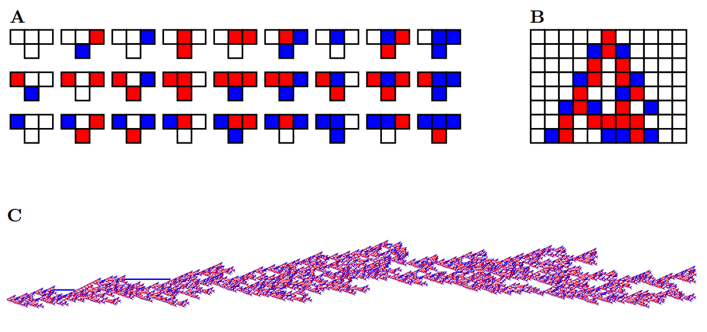
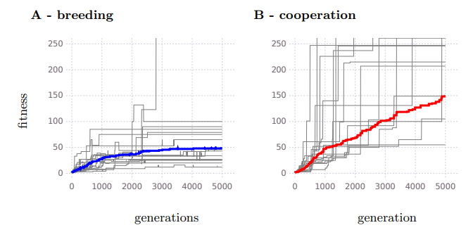

(2025-04-01) Paper accepted for FRCCS2025.

Cooperation guides evolution in a minimal model of biological evolution.
Conor Houghton
arxiv.org/abs/2504.05096
A recent paper by Steve Wolfram:
Why Does Biological Evolution Work? A Minimal Model for Biological Evolution and Other Adaptive Processes.
Stephen Wolfram
Complex Systems, 33(4), 2025 pp. 387-488.
doi.org/10.25088/ComplexSystems.33.4.387
suggested that the three-state cellular automaton would be a good test arena for evolution. A three-state cellular automaton is a rule that makes a pattern in three colors; different rules produce patterns. Many rules make patterns that go on for ever, many make patterns that never really get going. The remarkable property is that there are rules which neither carry on forever, nor stop after only a few steps: they continue for multiple steps before stopping. The figure above shows one unusually good rule and the resulting pattern.
The suggestion from Steve Wolfram is to regard the rules that go on forever as terrible and to count the length a rule with a finite patterns as a sort of fitness. The rules are then evolved to become fitter and ftter. This is an interesting example of simulated evolution because it has a complex fitness landscape, as with real evolution most changes to rules are bad, they make it the fitness worse.
I wanted to see if this was a useful place to test the Balwin Effect and cooperation; to see if groups of agents than can help each other by cooperating maintain a useful genetic diversity and evolve to be fitter. The answer, of course, is yes.

The cooperation scheme is on the right and is still producing improvements after 5000 iterations; the scheme without cooperation is on the left and has stopped getting better and has produced much less fit agents. This might suggest an approach to using the genetic algorithm but I was mostly pleased that it suggests that social behaviours might evolve in an efficient way.